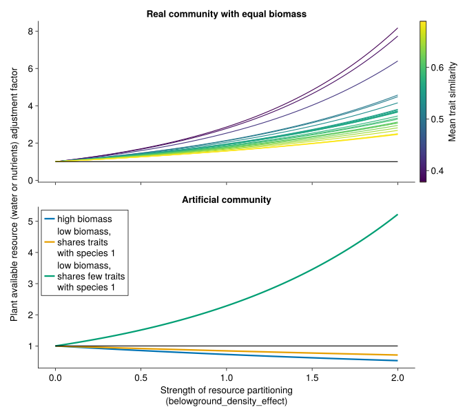
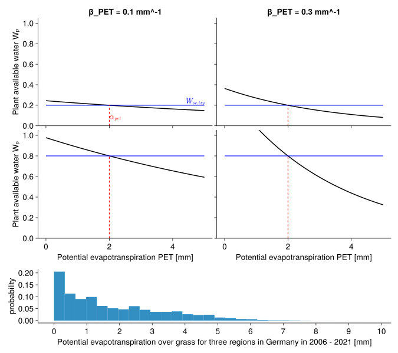
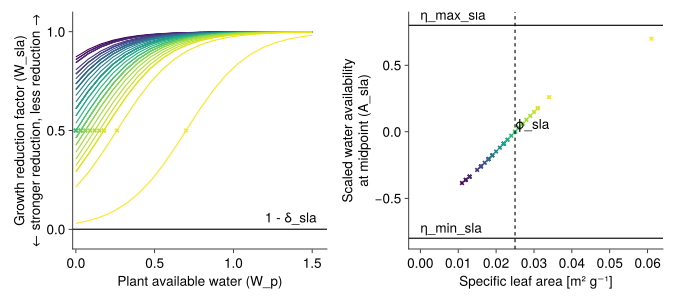
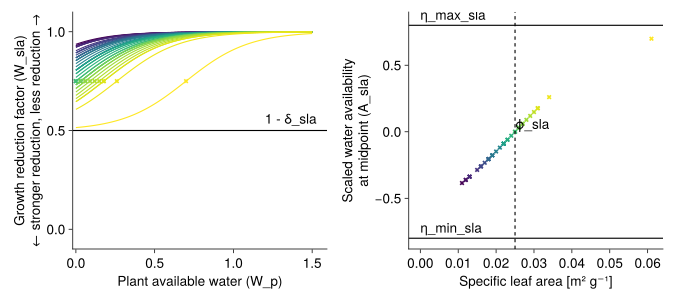
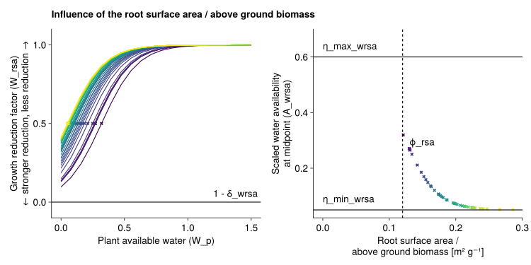
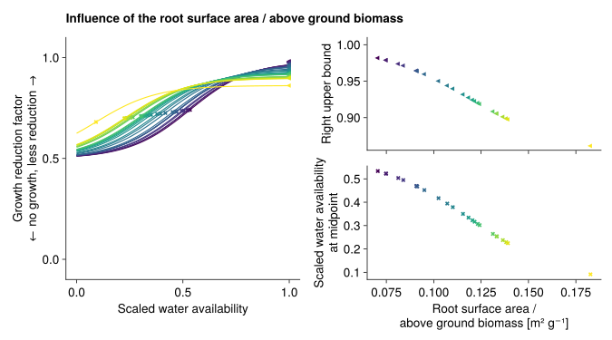
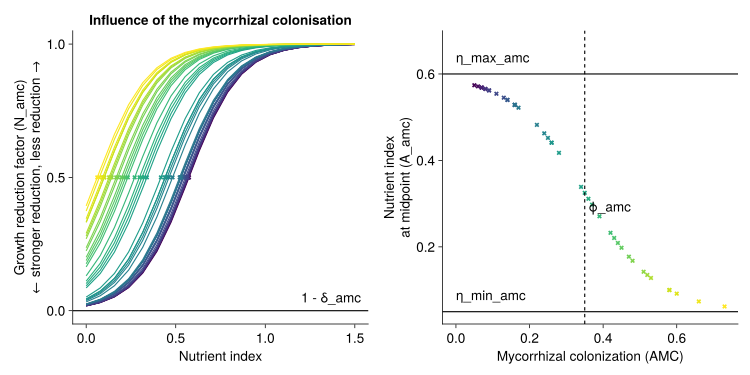
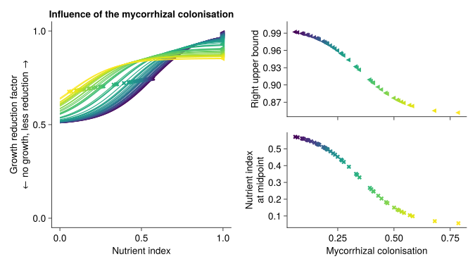
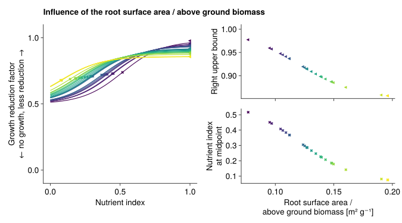

Species-specific growth adjustment
Light competition
GrasslandTraitSim.light_competition! — Functionlight_competition!(; container, biomass)
Calculate the distribution of potential growth to each species based on share of the leaf area index and the height of each species.
\[\begin{align*} LIG_{txys} &= \frac{LAI_{txys}}{LAI_{tot, txy}} \cdot \left(\frac{H_s}{H_{cwm, txy}} \right) ^ {\beta_H} \\ H_{cwm, txy} &= \sum_{s=1}^{S}\frac{B_{txys}}{B_{tot, txy}} \cdot H_s \end{align*}\]
Parameter, see also SimulationParameter:
- $\beta_H$ (
β_height) controls how strongly taller plants gets more light for growth [-]
Variables:
- $LAI_{txys}$ (
LAI) leaf area index of speciessat timetand patchxy[-] - $LAI_{tot, txy}$ (
LAItot) total leaf area index, seecalculate_LAI![-] - $B_{txys}$ (
biomass) dry aboveground biomass of each species [kg ha⁻¹] - $H_s$ (
height) potential plant height [m] - $H_{cwm, txy}$ (
height_cwm) community weighted mean height [m]
Output:
- $LIG_{txys}$ (
light_competition) light competition factor, distributes total potential growth to each species [-]
Taller plants get more light and can therefore growth more than smaller plants. This is modelled by the influence of the potential height in relation to the community weighted mean potential height. The strenght of this relationship is modelled with the parameter $\beta_H$.
The potential height refers to the height that the plant would reach if it would not be limited by other factors.

–
Below-ground competition
GrasslandTraitSim.below_ground_competition! — Functionbelow_ground_competition!(; container, biomass)
Models the below-ground competiton between plants.
Plant available nutrients and water are reduced if a large biomass of plant species with similar root surface area per above ground biomass (rsa) and arbuscular mycorrhizal colonisation (amc) is already present.
We define for $N$ species the trait similarity matrix $TS \in [0,1]^{N \times N}$ with trait similarities between the species $i$ and $j$ ($ts_{i,j}$), where $ts_{i,j} = ts_{j,i}$ and $ts_{i,i} = 1$:
\[TS = \begin{bmatrix} ts_{1,1} & ts_{1,2} & \dots & & ts_{1,N} \\ ts_{2,1} & ts_{2,2} & & \\ \vdots & & \ddots & & \\ ts_{N,1} & & & & ts_{N,N} \\ \end{bmatrix} = \begin{bmatrix} 1 & ts_{1,2} & \dots & & ts_{1,N} \\ ts_{2,1} & 1 & & \\ \vdots & & \ddots & & \\ ts_{N,1} & & & & 1 \\ \end{bmatrix}\]
and the biomass vector $B \in [0\,\text{kg ha⁻¹}, ∞\,\text{kg ha⁻¹}]^N$ with the biomass of each plant species $b$:
\[B = \begin{bmatrix} b_1 \\ b_2 \\ \vdots \\ b_N \\ \end{bmatrix}\]
Then, we multiply the trait similarity matrix $TS$ with the biomass vector $B$:
\[TS \cdot B = \begin{bmatrix} 1 & ts_{1,2} & \dots & & ts_{1,N} \\ ts_{2,1} & 1 & & \\ \vdots & & \ddots & & \\ ts_{N,1} & & & & 1 \\ \end{bmatrix} \cdot \begin{bmatrix} b_1 \\ b_2 \\ \vdots \\ b_N \\ \end{bmatrix} = \begin{bmatrix} 1 \cdot b_1 + ts_{1,2} \cdot b_2 + \dots + ts_{1,N} \cdot b_N \\ ts_{2,1} \cdot b_1 + 1 \cdot b_2 + \dots + ts_{2,N} \cdot b_N \\ \vdots \\ ts_{N,1} \cdot b_1 + ts_{N,2} \cdot b_2 + \dots + 1 \cdot b_N \\ \end{bmatrix}\]
The factors are then calculated as follows:
\[\text{biomass_density_factor} = \left(\frac{TS \cdot B}{\text{α_TSB}}\right) ^ {- \text{β_TSB}} \\\]
The reduction factors control the density and increases the "functional dispersion" of the root surface area per aboveground biomass and the arbuscular mycorrhizal colonisation.
The TS matrix is computed before the start of the simulation (calculation of trait similarity) and includes the traits arbuscular mycorrhizal colonisation rate (amc) and the root surface area devided by the above ground biomass (rsa).
biomass_density_factoris the factor that adjusts the plant available nutrients and soil water [-]TSis the trait similarity matrix, $TS \in [0,1]^{N \times N}$ [-]Bis the biomass vector, $B \in [0, ∞]^{N}$ [kg ha⁻¹]β_TSBis the exponent of the below ground competition factor [-]

GrasslandTraitSim.init_transfer_functions! — Functioninit_transfer_functions!(; input_obj, prealloc, p)
Initialisation of the transfer functions that link the traits to the response to water and nutrient stress.
Water stress
The species differ in their response to water stress by the different trait values of the specific leaf area and the root surface areas per above ground biomass. The values of both response functions are multiplied to get factor that reduces the growth.
It is implemented in water_reduction!.
GrasslandTraitSim.water_reduction! — Functionwater_reduction!(; container, W, PET, PWP, WHC)
Reduction of growth based on the plant available water and the traits specific leaf area and root surface area per aboveground biomass.
Derives the plant available water.
The plant availabe water is dependent on the soil water content, the water holding capacity (WHC), the permanent wilting point (PWP), the potential evaporation (PET) and a belowground competition factor:
\[\begin{align*} W_{sc, txy} &= \frac{W_{txy} - PWP_{xy}}{WHC_{xy}-PWP_{xy}} \\ W_{p, txys} &= D_{txys} \cdot 1 \bigg/ \left(1 + \frac{\text{exp}\left(\beta_{pet} \cdot \left(PET_{txy} - \alpha_{pet} \right) \right)}{ 1 / (1-W_{sc, txy}) - 1}\right) \end{align*}\]
- $W_{sc, txy}$ is the scaled soil water content $\in [0, 1]$ [-]
- $W_{txy}$ is the soil water content [mm]
- $PWP_{xy}$ is the permanent wilting point [mm]
- $WHC_{xy}$ is the water holding capacity [mm]
- $W_{p, txys}$ is the plant available water [-]
- $D_{txys}$ is the belowground competition factor [-], in the programming code is is called
biomass_density_factor - $PET_{txy}$ is the potential evapotranspiration [mm]
- $β_{pet}$ is a parameter that defines the steepness of the reduction function
- $α_{pet}$ is a parameter that defines the midpoint of the reduction function

Derive the water stress based on the specific leaf area and the plant availabe water.
It is assumed, that plants with a higher specific leaf area have a higher transpiration per biomass and are therefore more sensitive to water stress. A transfer function is used to link the specific leaf area to the water stress reduction.
Initialization:
The specicies-specifc parameter A_sla is initialized and later used in the reduction function.
\[\text{A_sla} = \text{min_sla_mid} + \frac{\text{max_sla_mid} - \text{min_sla_mid}} {1 + exp(-\text{β_sla_mid} \cdot (sla - \text{mid_sla}))}\]
slais the specific leaf area of the species [m² g⁻¹]min_sla_midis the minimum ofA_slathat can be reached with a very low specific leaf area [-]max_sla_midis the maximum ofA_slathat can be reached with a very high specific leaf area [-]mid_slais a mean specific leaf area [m² g⁻¹]β_sla_midis a parameter that defines the steepness of function that relate theslatoA_sla
Reduction factor based on the plant availabe water:
\[\text{W_sla} = 1 - \text{δ_sla} + \frac{\text{δ_sla}} {1 + exp(-\text{k_sla} \cdot (\text{W_p} - \text{A_sla}))}\]
W_slais the reduction factor for the growth based on the specific leaf area [-]A_slais the value of the plant available water at which the reduction factor is in the middle between 1 -δ_slaand 1 [-]δ_slais the maximal reduction of the growth based on the specific leaf areaW_pis the plant available water [-]k_slais a parameter that defines the steepness of the reduction function
Overview over the parameters:
| Parameter | Type | Value |
|---|---|---|
min_sla_mid | fixed | -0.8 [-] |
max_sla_mid | fixed | 0.8 [-] |
mid_sla | fixed | 0.025 [m² g⁻¹] |
β_sla_mid | fixed | 75 [g m⁻²] |
k_sla | fixed | 5 [-] |
δ_sla | calibrated | - |
A_sla | species-specific, derived | - |
Influence of the δ_sla:
δ_sla equals 1: 
δ_sla equals 0.5: 
Reduction of growth due to stronger water stress for lower specific root surface area per above ground biomass (rsa).
- the strength of the reduction is modified by the parameter
δ_wrsa
δ_wrsa equals 1: 
δ_wrsa equals 0.5:

Nutrient stress
The species differ in the response to nutrient availability by different proportion of mycorrhizal colonisations and root surface per above ground biomass. The maximum of both response curves is used for the nutrient reduction function. It is assumed that the plants needs either many fine roots per above ground biomass or have a strong symbiosis with mycorrhizal fungi.
It is implemented in nutrient_reduction!.
GrasslandTraitSim.nutrient_reduction! — Functionnutrient_reduction!(; container, nutrients)
Reduction of growth based on plant available nutrients and the traits arbuscular mycorrhizal colonisation and root surface area / aboveground biomass.
Reduction of growth due to stronger nutrient stress for lower arbuscular mycorrhizal colonisation (AMC).
- the strength of the reduction is modified by the parameter
δ_amc
δ_amc equals 1: 
δ_amc equals 0.5: 
Reduction of growth due to stronger nutrient stress for lower specific root surface area per above ground biomass (rsa).
- the strength of the reduction is modified by the parameter
δ_nrsa
δ_nrsa equals 1: 
δ_nrsa equals 0.5: 